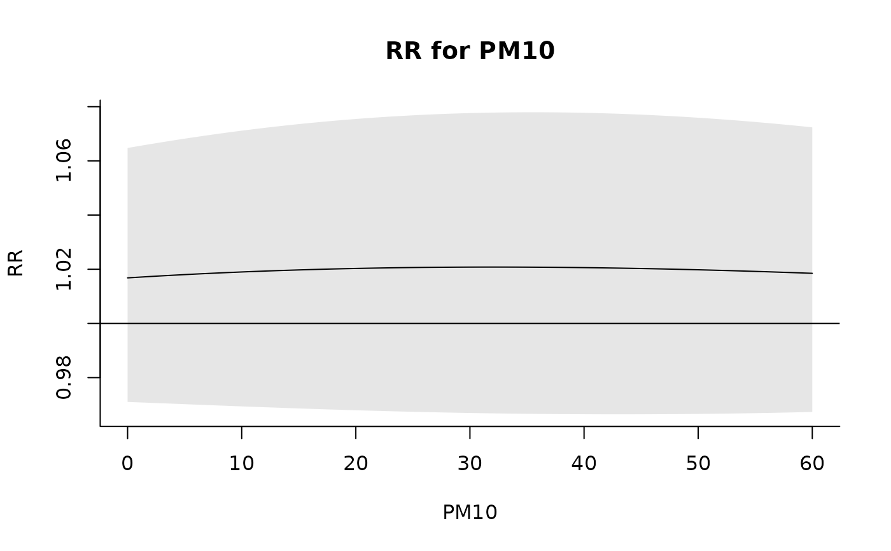

poly.RdThe function generates a basis matrix of polynomial transformations. It is meant to be used internally by onebasis and crossbasis and not directly run by the users.
poly(x, degree=1, scale, intercept=FALSE)The predictor vector is scaled by default through the argument scale to avoid numerical problem with powers of very high/low values.
If intercept=TRUE, an intercept is included in the model, namely an additional variable with a constant value of 1.
A matrix object of class "poly". It contains the attributes degree, scale and intercept, with values which can be different than the arguments provided due to internal reset.
This function is mainly used internally thorugh onebasis and crossbasis to create basis and cross-basis matrices, respectively. It is not exported in the namespace to avoid conflicts with the function with the same name in the package stats, and can be accessed through the triple colon operator ':::' (see Examples below).
In particular, the function poly from the package stats cannot be used directly, as it does not store as attributes all the parameters need to univocally define the transformation.
onebasis to generate basis matrices and crossbasis to generate cross-basis matrices.
See dlnm-package for an introduction to the package and for links to package vignettes providing more detailed information.
### simple use (accessing non-exported function through ':::')
dlnm:::poly(1:5, degree=3)
#> 1 2 3
#> [1,] 0.2 0.04 0.008
#> [2,] 0.4 0.16 0.064
#> [3,] 0.6 0.36 0.216
#> [4,] 0.8 0.64 0.512
#> [5,] 1.0 1.00 1.000
#> attr(,"degree")
#> [1] 3
#> attr(,"scale")
#> [1] 5
#> attr(,"intercept")
#> [1] FALSE
#> attr(,"class")
#> [1] "poly" "matrix"
dlnm:::poly(1:5, degree=3, intercept=TRUE)
#> 1 2 3 4
#> [1,] 1 0.2 0.04 0.008
#> [2,] 1 0.4 0.16 0.064
#> [3,] 1 0.6 0.36 0.216
#> [4,] 1 0.8 0.64 0.512
#> [5,] 1 1.0 1.00 1.000
#> attr(,"degree")
#> [1] 3
#> attr(,"scale")
#> [1] 5
#> attr(,"intercept")
#> [1] TRUE
#> attr(,"class")
#> [1] "poly" "matrix"
### use as an internal function in onebasis
b <- onebasis(chicagoNMMAPS$pm10, "poly", degree=3)
summary(b)
#> BASIS FUNCTION
#> observations: 5114
#> range: -3.049835 356.1768
#> df: 3
#> fun: poly
#> degree: 3
#> scale: 356.1768
#> intercept: FALSE
model <- glm(death ~ b, family=quasipoisson(), chicagoNMMAPS)
pred <- crosspred(b, model, at=0:60)
#> centering value unspecified. Automatically set to 150
plot(pred, xlab="PM10", ylab="RR", main="RR for PM10")
